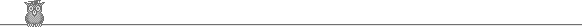

<html><head>

<title>Prog1 - Functional Programming</title>
<meta http-equiv="Content-Type" content="text/html; charset=ISO-8859-1">
</head><body background="Prog1v2008_files/brown-wall.gif" 
bgcolor="#ffffff">
<table align="center" bgcolor="#ffffcc" border="1" width="100%">
  <tbody><tr> 
    <td> 
      <div align="center">CS 396 </div>
    </td>
    <td> 
      <div align="center"> <font face="Impact">Functional Programming: 
Scheming 
        about Lisp</font></div>
    </td>
    <td> 
      <div align="center"></div>
    </td>
  </tr>
</tbody></table>
<table cellspacing="8" width="76%">
  
  <tbody><tr> 
    <td height="15"><b>Rules:</b> Individual Effort, no sharing of code!</td>
    <td> 
      <div align="center"></div>    </td>
  </tr>
</tbody></table>
<p><b>Overview:</b> As we will be using Scheme for the programming 
assignments 
  in here, it is vitally important for you to get acquainted with the 
language 
  as quickly as possible. Fortunately, the extremely simple syntax and 
elegant 
  nature of Lisp will make this fairly easy --- one you manage to free 
yourself 
  from your imperative preconceptions and embrace the enlightened 
functional paradigm 
  that underlies Lisp. Some things you'll learn to love include:</p>
<ul>
  <li><b>Functional flow of control and recursive thinking.</b> Although
 many 
    imperative constructs (e.g. looping) have been added to Scheme by 
misguided 
    souls --- a sad concession in my view --- you will fare a lot better
 and produce 
    much more clean, elegant code if you invest the effort to truly 
immerse yourself 
    in the functional mindset. This requires a conscious effort to alter
 your 
    mindset!</li>
  <li><b>Use of (only) lists to structure data.</b> There is nothing 
magical about 
    a list --- it is merely (recall data structures) the most general 
purpose 
    data structure around; essentially any data structure (e.g. tree, 
record, 
    etc.) can be modeled using hierarchically structured lists. You 
should get 
    comfortable with constructing, deconstructing and manipulating 
lists.</li>
  <li><b>Erase the line between "code" and "data".</b> What, 
    at the core, is the code you type? Symbols -- nothing but symbols. 
Moreover, 
    you'll notice that Lisp code is (gee!) nothing more than a nested 
list. Thus, 
    it's simple to write a Lisp program that writes or alters other Lisp
 programs 
    --- even itself! This is surely bending your mind, but honest, it's 
completely 
    natural in Lisp. We'll need this concept if we want to write 
interpreters 
    for various genres of languages.</li>
</ul>
<p>There are many other weird and wonderful things about Lisp you'll 
likely learn 
  along the way. The bottom line is that you need to become proficient 
at the 
  language. Subsequent programming assignments will assume that you are.
 </p>
<p><b>The assignment: </b></p>
<p>This assignment consists of several discrete programming challenges 
to acquaint 
  you with various aspects of the language. They are loosely ordered 
from easiest 
  to hardest, i.e., you should probably start with the first one. </p>
<table border="1" width="75%">
  <tbody><tr bordercolor="#FF6666" align="center" bgcolor="#cccccc"> 
    <td> 
      <div align="center"><a href="#basics">Part 1: The basics</a></div>
    </td>
    <td> 
      <div align="center"><a href="#fnmaker">Part II: Function-maker</a></div>
    </td>
    <td> 
      <div align="center"><a href="#brother">Part III: Tic-Tac-Toe</a></div>
    </td>
  </tr>
</tbody></table>
<p>The following constraints will help exercise your functional thinking
 and keep 
  your souls pure:</p>
<ol>
  <li>No calls to "set!" (or set-car! or set-cdr!) which is the Scheme 
    assignment operator. You may, of course, use "let" (and variants) 
    to control your namespace within functions; similarly, you may use 
"define" 
    at the top level. </li>
  <li>No use of explicit looping. I believe that Scheme does include 
some looping 
    constructs, but they violate the whole idea of the functional 
paradigm --- 
    I don't want to see them in your code. Think recursively!</li>
  <li>No use of "begin". Scheme allows you to sequentially execute
    statements  -- another violation of the functional paradigm added by
 hard-core
    proceduralist  hackers.. I admit that this is sometimes useful, 
particularly
    when you need  to use "unpure" side-effect functions like "display" 
and "set!".
     Hint: You can utilize (bastardize) "let*" to do some primitive
     sequencing  of operations for the few cases where you really need 
it. </li>
</ol>
<p>These constraints apply to ALL PROGRAMMING ASSIGNMENTS in the class, 
unless
  explicit exceptions are granted within assignment statements. If you 
have a
  hankering to do something questionable, ask first. A major point of 
this exercise
  is to use "functional programming", so I'm going to be strict. </p>
<p> <font
 color="#cc0000">Important! 
  You <i>must name your functions exactly as shown here</i>; these are 
the functions 
  I'll call when I test your output.</font></p>

<h3><a name="basics"></a>Part I: The basics</h3>
<h3><b>Note on elegance:</b> <i><font size="2">Yes it does matter. Avoid
 calling 
  functions like "length", or using expensive overhead functions like 
  "append" in any but the most conservative ways. Just remember the 
  overhead involved, e.g., length has to traverse the whole list to get 
an answer; 
  append has to copy the whole first argument. Ask yourself if there 
isn't a more 
  elegant way to handle it, where you avoid inefficiencies like this.</font></i></h3>
<p><b>Suppose we have defined the following lists to use in upcoming 
examples:</b></p>
<p>(define x '(1 2 3 4 5 6 7 8 9 10))</p>
<p>(define y '(((a) b) (c d (d (f g) h)) i))</p>
<h3><b>Define the functions:</b></h3>
<p><b>ndelete</b> -- The simple <b>ndelete </b>function takes in a list 
and some 
  integer N. It returns the list <em>with every nth element removed</em>.
 So if N=2, the 
  list has every other element removed; if N=5, is has every fifth 
element removed. 
  It handles lists of all flavors (atoms, numbers, nested lists). It 
pays attention 
  only to top-level elements (i.e., it doesn't reform sublists). If N is
 greater 
  than the number of elements in the input list, it does nothing, ie, 
returns 
  the input list. Examples:</p>
<blockquote> 
  <pre>&gt; (ndelete x 3)<br>(1 2 4 5 7 8 10)<br>&gt; (ndelete x 1)<br>()<br>&gt; <br>(ndelete x 222)<br>(1 2 3 4 5 6 7 8 9 10)<br>&gt; (ndelete y 2)<br>(((a) b) i)</pre>
  <b></b> </blockquote>
<p><b>deep-member</b>? --- Just an advanced form of the built-in member?
 function.
   Takes a complex list (i.e. a list that may have nested lists inside 
of it)
  and a target atom as input. It searches the list (including all nested
 sublists)
  and returns #t if the target atom is found; else it returns #f.</p>
<blockquote> 
  <p>&gt; (deep-member? 3 x)<br>
    #t<br>
    &gt; (deep-member? 444 x)<br>
    #f<br>
    &gt; (deep-member? 'f y)<br>
    #t<br>
    &gt; (deep-member? 'foo y)<br>
    #f<br>
    &gt; </p>
</blockquote>
<p><b>Mergesort</b> --- We want to implement the elegant and naturally 
recursive
  MERGESORT algorithm, to show how lovely and simple this is in a 
functional
  language like Scheme.&nbsp; I've given you the <strong>mergesort</strong>
 function
  below --- only it's not complete.&nbsp; In particular, there are two 
functions
  missing: <strong>merge</strong> and <strong>splitter</strong>.&nbsp;&nbsp;
 These
  are what I want you to write!&nbsp; Details on each follow 
below.&nbsp; Here
is the promised mergesort function: </p>
<pre>;; Implements the elegant and naturally recursive mergesort algo
;; Idea is that, given a list, we split in two, mergesort these two, then 
;; merge together the resulting sorted lists.
 (define mergesort
   (lambda (alist)
     (if (null? (cdr alist)) alist
         (let ((splits (splitter alist)))
           (merge (mergesort (car splits)) (mergesort (cadr splits)))))))
</pre>
<p><b>Splitter</b> --- Takes a complex list and turns it into list of 
two simple
  lists, each containing half of the original list. For odd numbered 
lists, the
  uneven element is added to the first list. Efficiency: for top points,
 you
  may NOT use a "length" fn (built-in or homemade) in writing this
  one; it should split it in one recursive pass down the list.&nbsp; So 
continuing
  with the examples:</p>
<blockquote>
  <p>&gt; (define z (steamroller x))<br>
    &gt; z<br>
    (a f c d f g e g h e g e e)<br>
    &gt; (splitter z)<br>
    ((a f c d f g e) (g h e g e e))<br>
    &gt; (splitter '(a) )<br>
    ((a) ())</p>
</blockquote>
<p><b>merge -- </b>Takes two <i>sorted</i> lists of integers and merges 
them
  into a single sorted list.</p>
<blockquote>
  <p>(define x '(1 3 5 7 9))<br>
    (define y '(2 4 6 8 10))</p>
  <p>(merge x y) --&gt; (1 2 3 4 5 6 7 8 9 10)</p>
</blockquote>
<p><strong>Overall MERGESORT performance </strong>--- When you have 
written the
  two missing functions, the <strong>mergesort</strong> function I've 
written
  for you should work flawlessly.&nbsp;&nbsp; To get a B or C, your two 
functions
  and overall mergesort should work perfectly on<em> integer lists</em>.&nbsp;
 
  For example:</p>
<pre>(define x1 '(12 23 2 5 64 23 6756 234 2 42 535))
&gt; (mergesort x1)
(2 2 5 12 23 23 42 64 234 535 6756)</pre>
<p>To get an A, your splitter, merge, and mergesort should be able to 
deal with <em>any</em> type
  of list, even mixed lists.&nbsp; Examples:</p>
<pre>(define x2 '(how does he do that cool stuff?))
 (define x3 '(I can "go" 4 "about" 123 sodas k?))
 &gt; (mergesort x2)
(cool do does he how stuff? that)
&gt; (mergesort x3)
(4 123 "about" can "go" i k? sodas)</pre>
<blockquote>&nbsp;</blockquote>
<p></p>
<h3><a name="fnmaker"></a>Part II: The function-maker</h3>
<p>This part of the assignment introduces you to a crown jewel of LISP, 
namely, 
  the ability to erase the line between data, which you manipulate as 
you please, 
  and code, which the machine can execute. You are to write:</p>
<p>(fn-maker &lt;fn-spec&gt;) --- this function is, as it implies, a 
function 
  maker. You pass it a &lt;fn-spec&gt; and it uses it to define a new 
function. 
  The &lt;fn-spec&gt; has (exactly) the following form:</p>
<p>((name: <name>&lt;name&gt;) (args: <args-list>&lt;args&gt;) (body: 
&lt;body&gt;))</args-list></name></p>
<p>It uses this information to define the new function. An example:</p>
<pre>&gt; (define temp '((name: addtwo) (args: x) (body: (+ x 2)))) 
&gt; (fn-maker temp)    
&gt; addtwo #<procedure:addtwo><procedure:addtwo><procedure:addtwo>&lt;procedure: addtwo&gt; ;; Look! The new function is now defined!
&gt; (addtwo 5) 
7 
&gt;<br>
<b>Here's another example defining a multiple argument function:</b><br><br>&gt; ;; here is a variable test-spec. I've set it to a list -- which just happens to 
;; to represent a function specification. But it's just data!  I'm just passing this list into
;; my function maker!  Which defines the specified function for me!
<br>test-spec<br>((name: mult-sum-three) (args: x y z) (body: (* (+ x y z) 3)))<br>&gt; <br>(fn-maker test-spec)<br>&gt; <br>mult-sum-three<br>#&lt;procedure:mult-sum-three&gt;<br>&gt; <br>(mult-sum-three 1 2 3)<br>18<br>&gt; 
</procedure:addtwo></procedure:addtwo></procedure:addtwo></pre>
<p>Obviously, fn-maker could be used to define very complex new 
functions. In 
  fact (foreshadowing!), one could imagine the &lt;fn-spec&gt; argument 
to be 
  generated by other very clever functions that know how to write 
functions. </p>
<p><br>
</p>
<h3><b><a name="brother"></a>Part III: Tic-Tac-Toe</b></h3>
<p>This problem will give you some hands-on experience with list 
manipulation 
  --- and it will illustrate some of the drawbacks of having a single 
data structure 
  and limited data manipulation facilities.&nbsp; Sigh! Every 
programming language 
  has its downsides!&nbsp; The good news that solving these challenges 
will give 
  you a thorough introduction to functional thinking!</p>
<p>Your system will have to manipulate a tic-tac-toe board --- which 
will of course, 
  require (ack!) <i>state.</i> So <b>I'll allow one top-level variable 
called 
  <font size="4">ttboard</font></b> which will hold the current 
tic-tac-toe board. 
  &nbsp; Now, normally, I wouldn't want to prejudice your creativity by 
suggesting 
  a data representation.&nbsp; But I'm going to GIVE you a function or 
two (gasp!), 
  so we'll need to be on the same wavelength.&nbsp; Thus, the 
tic-tac-toe board 
  will be represented by a list with three nested list. For example, a 
blank board 
  looks like ( (_ _ _) (_ _ _) (_ _ _) ). The nested lists are the three
 rows 
  of the 3x3 board; underscores are used to represent empty 
spaces.&nbsp; The 
  underscores are replaced by 'x' and 'o' as play proceeds.</p>
<p>I don't expect sophistication here --- you system doesn't have to be 
"smart" 
  or actually play tic-tac-toe against you --- that would be a nice 
problem for 
  an upcoming AI course!&nbsp; All I want is the basics.&nbsp; Pretend 
you're 
  building the basis for a smart tic-tac-toe game (not that this game 
involves 
  much brains!) for which you'll add the smart parts later! </p>
<p>Specifically, I'll expect the following functions:</p>
<p><b>(ttnew-game)</b> --- just resets the gameboard to a blank board.</p>
<p><b>(ttstat)</b> --- Just displays the current state of the 
game.&nbsp; Specifically 
  it prints out (side effect!) the game board as a 3x3 matrix that we 
humans can 
  read easily.&nbsp; It also returns (as the function value) the raw 
gameboard 
  in list form.&nbsp; Observe:</p>
<pre>&gt; (ttnew-game)<br>&gt; (ttstat)<br>(_ _ _)<br>(_ _ _)<br>(_ _ _)<br>((_ _ _) (_ _ _) (_ _ _))<br>&gt; </pre>
<p><b>(ttplay &lt;symbol&gt; &lt;row&gt; &lt;col&gt;)</b> --- The main 
action 
  function. You feed it a symbol to place (an 'x or 'o) and a row, col 
to place 
  it in. It then: </p>
<ul>
  <li>checks to make sure its a valid placement (on board and not 
occupied). Prints 
    error message and does nothing if there's a problem</li>
  <li>places the new symbol and updates the gameboard. </li>
  <li>Checks for a winner.&nbsp; If someone has won the game at this 
point, it 
    announces the winner.</li>
</ul>
<p>If you suspect that each of these major activities involves more than
 one subfunctions, 
  you're right!&nbsp; In fact, I'll give you one of them below.&nbsp; 
Here is 
  <a 
href="http://www.cefns.nau.edu/%7Eedo/Classes/CS396_WWW/Programs/Functional_paradigm/tic-tac-toe-example.html">a
 comprehensive example of the system in 
  action</a>, "playing" tic-tac-toe.&nbsp; </p>
<p><strong>Helping Hints:</strong>&nbsp; One of the functions that I 
suspect you'll 
  be wanting to write is (checkposition &lt;col&gt; &lt;row&gt;), which 
checks 
  to make sure a proposed placement --- at row, col --- is (a) on the 
board and 
  (b) not occupied. It should return false if the proposed position 
won't work.&nbsp; 
  Here's how it works...</p>
<pre>&gt; (ttstat)<br>(_ o _)<br>(_ x _)<br>(_ _ x)<br>((_ o _) (_ x _) (_ _ x))<br>&gt; (checkposition 2 2)<br>#f<br>&gt; (checkposition 23 555)<br>#f<br>&gt; (checkposition 1 1)<br>#t</pre>
<p>I'll give you this function to give you an example of how to tackle a
 function 
  like this.&nbsp; It's relatively easy.&nbsp; I'll also give you a 
skeleton for 
  my checkwin function, which I think it probably the most challenging 
function 
  to write --- albeit perhaps not if I give away my clever approach to 
dealing 
  with it.&nbsp; But I leave it to you to implement the helper functions
 it calls!&nbsp; 
  So <a 
href="http://www.cefns.nau.edu/%7Eedo/Classes/CS396_WWW/Programs/Functional_paradigm/sample_tic_tac_code.html">here
 are my code snippets</a>.</p>
<p>Note that when I test this, you may assume that I'm going to feed it 
all sorts 
  of balony input -- so make sure the error-checking elements are 
solid.&nbsp; 
  If you're game fails to detect wins, lets me place pieces in screwy 
places, 
  or crashes on bad input, then you could be in hot water!&nbsp; 
Idiot-proof!</p>
<table border="1" cellpadding="4" cellspacing="3" width="100%">
  <tbody><tr> 
    <td bgcolor="#ffffcc"><b><i>Note:</i></b><i> For Part III <b>only</b>,
 you 
      may bend the prohibition against using "set!" --- you will need 
      one or two to update the state (i.e. the game board) of your 
system. So 
      it's okay to have one or two in your code for this purpose. And I 
mean *one 
      or two*; anyone going hog-wild will be docked!&nbsp; Stick with 
the functional 
      model of thinking/computation!</i></td>
  </tr>
</tbody></table>
<blockquote> 
  <p><strong><font color="#660000" face="Comic Sans MS, Courier">Have 
fun!&nbsp; 
    Think elegance!&nbsp; Think recursion!&nbsp; Think.....<br>
    &nbsp;&nbsp;&nbsp;&nbsp;&nbsp;&nbsp;&nbsp;&nbsp; 
............FUNCTIONAL PROGRAMMING 
    PARADIGM! </font></strong></p>
  <p>&nbsp;</p>
</blockquote>
<h2><strong>To Turn In:</strong></h2>
<ol>
  <li>Hardcopy packet:&nbsp; cover sheet, brief overview of your 
functions for 
    each part, examples of your code in action on test input, and 
hardcopy of 
    the code itself.&nbsp; In that order.</li>
  <li>Electronic Submission of your code (see link on assignments 
page).&nbsp; 
    Please put code for all the parts all in ONE file --&gt; so I load 
that file 
    and all of your functions for all parts are defined.&nbsp; Please 
make sure 
    your functions<strong> are named EXACTLY as specified</strong>, so 
that my testing program 
    can call them!</li>
</ol>
</body></html>